Edición con leyenda
El panel toca el marco inferior, deja aire a los lados y redondea sus dos esquinas superiores. Contiene únicamente la leyenda. Corte de 58 × 88 mm con 3 mm de sangrado frontal y 2 mm al reverso en la prueba actual.
Guía visual para ilustrar, componer y leer las cartas de la casona.

El encabezado reúne el emblema de familia y el título. El marco ornamental contiene la escena. Las siluetas, los tonos medios y el grano fino de papel dan volumen a personajes y objetos bajo la luz de velas y faroles.
El panel toca el marco inferior, deja aire a los lados y redondea sus dos esquinas superiores. Contiene únicamente la leyenda. Corte de 58 × 88 mm con 3 mm de sangrado frontal y 2 mm al reverso en la prueba actual.
La banda se lee de izquierda a derecha: objetivo, coste, tirada y resultado. Hasta cinco pictogramas por carta, cifras a la derecha, punto medio entre acciones y 2 mm de aire arriba y abajo.
 4+ · Tirada de cuatro o más
4+ · Tirada de cuatro o más
Medición en la imagen aprobada de Espejo de obsidiana (O08), de 580 × 880 px. La transición de título a escena está en la fila 87; el panel inferior comienza en la fila 793. A tamaño final, el título ocupa 8.7 mm, la escena 70.6 mm y la leyenda 8.7 mm. Estas proporciones describen el original de referencia; los paneles de las ediciones nuevas se ajustan dentro del área segura.
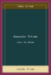
PNG vertical 2:3 de al menos 1024 × 1536 px, sin texto ni marco. Nombra el archivo <id-del-juego>__v<n>.png. Reserva espacio para título y leyenda y comprueba que manos, rostro y elementos narrativos queden dentro del corte.
Estos pares de fondo y tinta del sistema original distinguen las funciones de los pictogramas. La ilustración conserva la paleta propia de cada escena.
Fondo #DCEDE9
Tinta #0F4A4AFondo #F3D9DC
Tinta #7A1322Fondo #DCE2F3
Tinta #22305CFondo #F0E4CB
Tinta #5E4312Fondo #E6DCF2
Tinta #3A2550Colores representativos de las zonas ilustradas, agrupados en sRGB. Cada muestra identifica la carta de origen.
#2A5055 · ID01#F1DBAC · I14#EE7129 · I14#D8954B · I09#712236 · S13#B12149 · I06#5E3C53 · A09Color más frecuente del encabezado de una carta aprobada por tipo. Se mide sobre la vista media. Roles, espíritus y componentes carecen de un frente compuesto aprobado en este catálogo.
#031A32 · I01#0B3D30 · I09#1A396A · I11#653808 · P02#5E4915 · O01#0C0521 · A01#0E062B · H01#382605 · ID01#580017 · S01#024746 · E01#653808 · Q1#653808 · P03El histórico de imprenta de 58 × 88 mm conserva texto seleccionable y fuentes incrustadas. El tamaño se adapta al largo del título y de la leyenda. Las muestras son recortes del frente aprobado de Espejo de obsidiana.
Nombre de carta · negrita (700). Espejo de obsidiana, 12.64 pt; Termómetro, 13 pt.
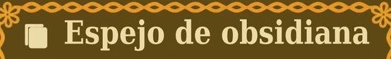
Fuente DejaVu · Licencia Bitstream Vera y modificaciones DejaVu.
Leyenda · regular cursiva (400). Espejo de obsidiana, 6.80 pt; Termómetro, 7 pt.
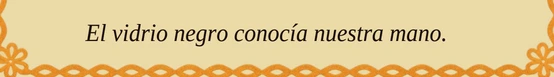
Fuente Liberation Serif · Licencia SIL Open Font License 1.1 de la distribución actual.
Fuente de la medición: Noche_de_Animas_Imprenta_Margenes_Corregidos.pdf. Los puntos corresponden al PDF a escala real.
El emblema identifica la familia; el pictograma comunica una acción o evidencia. El Vigía lleva la mano. La retícula de acción es de 24 × 24, con trazos y huecos de al menos 1,8 unidades.


La huella identifica la evidencia que se busca con el Espejo de mano. El aro representa el espejo; el pulgar oblicuo y los cuatro dedos separados hacen reconocible la mano. La segunda muestra reproduce los 5 mm de impresión.
Cinco comparaciones entre el frente aprobado y el estudio anterior al rediseño. Las observaciones provienen de los perfiles de rediseño de la guía artística. En personajes se verifica además el parecido: contorno de rostro, cabello, lentes y complexión. Las versiones de personaje pendientes se mantienen fuera de esta muestra.
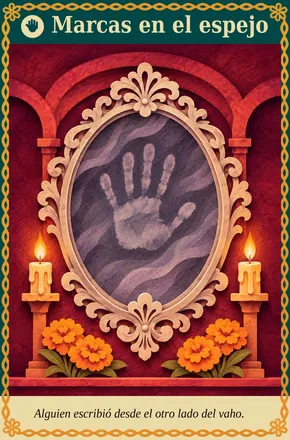
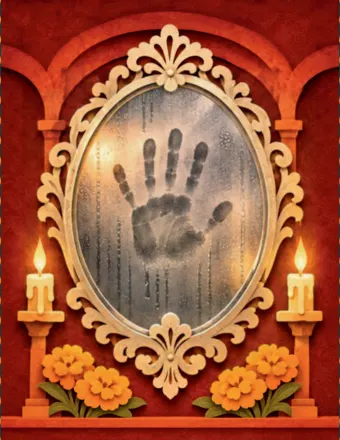
La huella y el cristal se describen con planos de tinta y tonos intermedios. El estudio anterior se acercaba al cristal fotográfico.

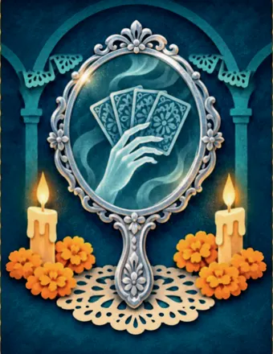
El canto conserva volumen. La revisión reduce el brillo cromado y el detalle de joyería.
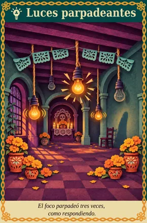
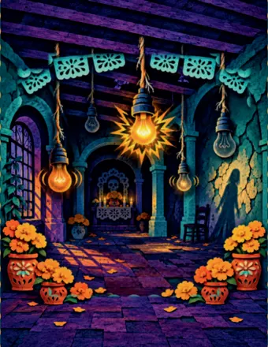
La luz marca el recorrido de la mirada. La guía pide reducir la erosión y el microdetalle de techo y piso.

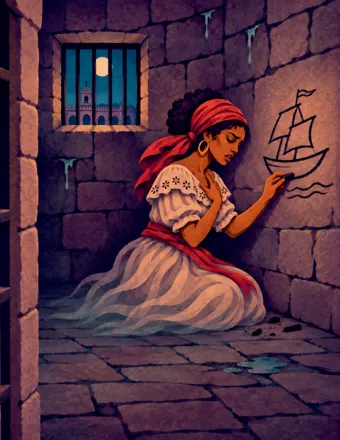
La translucidez conserva expresión, anatomía y pliegues; una superficie plana perdería esos rasgos.

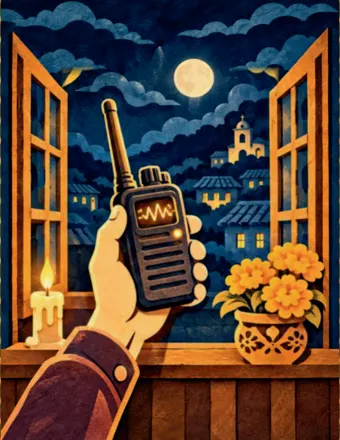
Los controles se leen por espesor y sombra. La revisión conserva el volumen sin biseles realistas.
La selección privilegia una escena que se entiende incluso en miniatura. En Rosario, el gesto de las manos lleva hasta las cuentas. En Cacería total, basta la casona iluminada bajo la luna. El encuadre cambia con la historia que necesita contar la carta.

El óvalo del espejo encierra un rostro y dirige la mirada hacia él.

Las manos reunidas, las cuentas y las dos velas construyen el gesto de rezar.

La taza domina el primer plano. El vapor claro se recorta contra el verde.
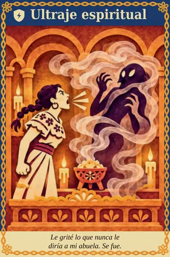
Dos figuras enfrentadas hacen legible el desafío por su postura.

El brasero fija la mirada; el humo claro dibuja una curva amplia.

El huevo y la mano enlazan a quien realiza la limpia con quien la recibe.
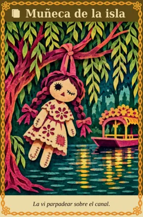
La muñeca se reconoce entre el follaje por su vestido claro y su escala.

La superficie oscura enmarca el reflejo de unas cartas. El rojo exterior lo hace destacar.
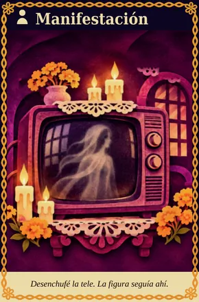
La aparición queda encerrada en una pantalla, rodeada por objetos cotidianos.

La postura del cuerpo comunica la posesión y las baldosas fijan su altura.
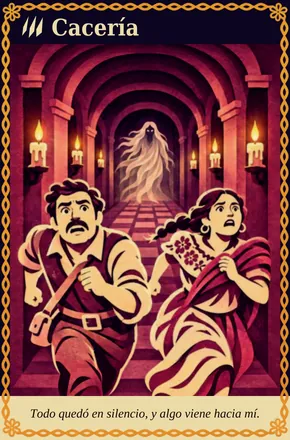
Los rostros y los cuerpos en fuga acercan la persecución al espectador.
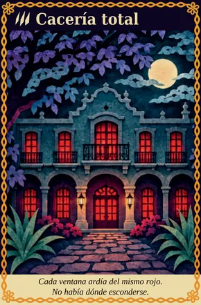
La fachada completa bajo la luna lleva la amenaza a toda la casona.
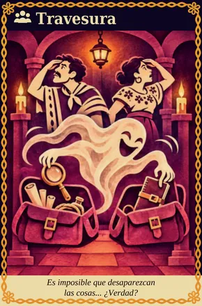
El giro claro entre las sillas permite seguir la travesura.
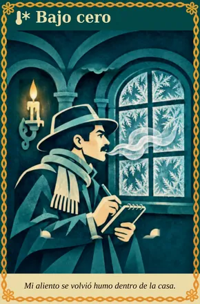
La ventana helada y el investigador que se acerca cuentan juntos el descenso de temperatura.
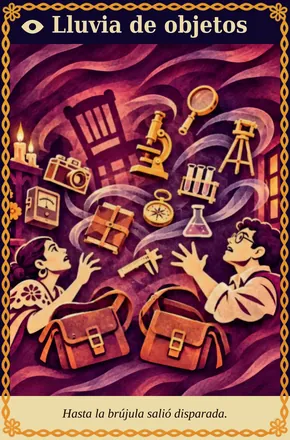
Los muebles suspendidos y la figura que se cubre dan dirección a la caída.

La masa amarilla crece sobre las figuras y concentra la amenaza.

El contraste entre el cuerpo inclinado y el espejo vertical hace visible el tirón.

La figura clara junto al agua se reconoce contra el paisaje azul nocturno.

Sombrero, caballo y traje oscuro dibujan una silueta continua.

La garra que asoma del armario permite imaginar al Cucuy con una sola parte del cuerpo.

La figura clara y las sillas levantadas comparten un mismo movimiento.
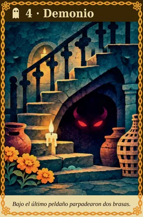
Los ojos en la sombra bajo la escalera bastan para señalar al Demonio.
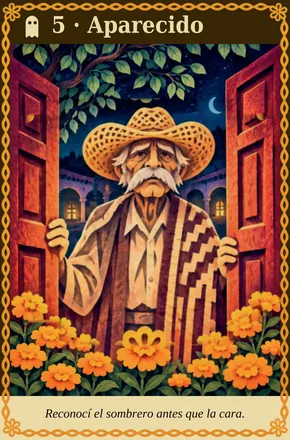
El sombrero y la figura erguida entre las puertas convierten la entrada en una aparición.
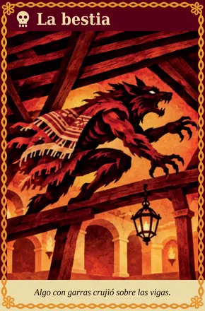
La carrera de la criatura atraviesa el encuadre en diagonal.

El rostro de frente y la boca abierta concentran el llanto.

Las figuras alrededor del fuego ordenan el ritual como escena colectiva.
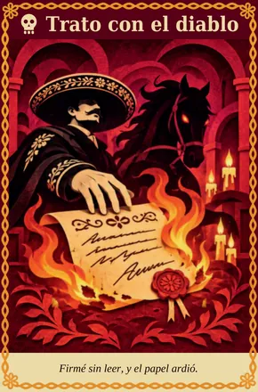
El documento y la mano llevan la atención al acto de pactar.

La figura clara destaca en el pasillo y guía la lectura hacia el fondo.
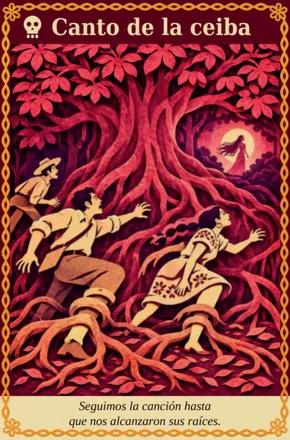
Las ramas y raíces de la ceiba envuelven a los personajes.
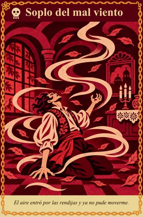
La cinta de viento traza un recorrido continuo entre los cuerpos.
Los rasgos de identidad y las versiones documentadas se reúnen en Personajes.

Reverso ilustrado del catálogo.
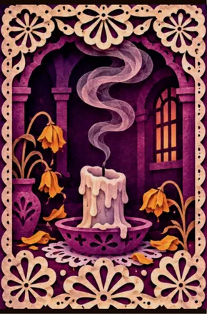
Reverso ilustrado del catálogo.
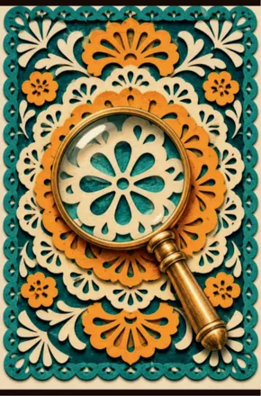
Reverso ilustrado del catálogo.
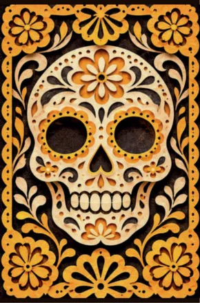
Reverso ilustrado del catálogo.

Reverso ilustrado del catálogo.
Los reversos ilustrados identifican cada mazo. Las hojas de consulta documentan el vocabulario de acciones y evidencias.